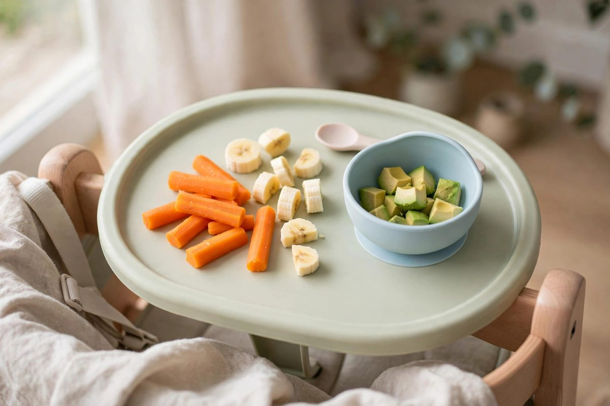

Home » Guides
Transition to Table Foods

The move from purees to table foods is one of the biggest steps in weaning. Over a few months, your baby goes from smooth spoonfuls to eating chopped pieces of the same food the family eats, at the table, with a cup instead of a bottle. It is a gradual process, and every baby moves at their own pace. This guide explains how to make the transition step by step, how to handle the messy middle stage, and how to know when your baby is ready for each new texture.
The stages of texture
Weaning moves through clear texture stages. At six months, food is smooth and runny. By seven to eight months, it is thicker, with soft lumps. By nine to ten months, food is mashed or chopped, with finger foods at every meal. By twelve months, most babies can eat chopped family foods with a range of textures. Move to the next stage when your baby manages the current one comfortably, not by age alone. If your baby gags often on a new texture, go back a step for a week and try again. There is no rush, but do not stay on smooth purees too long, because chewing skills need practice.
From spoon to self-feeding
Self-feeding starts with finger foods alongside spoon-feeding, and gradually takes over. Offer a spoon for your baby to hold, even if they make a mess, and let them try loading it themselves. Provide finger foods at every meal so they can practise picking food up and biting it. Expect a lot of food to end up on the floor at first: this is learning, not waste. Keep offering the spoon alongside finger foods, and do not take over when it gets messy, because your baby learns by doing.
Eating with the family
Family meals are the goal of the transition. Sit your baby at the table with everyone else, at the same time, eating the same food adapted for them. Babies learn by watching: they copy how adults chew, how food is picked up, and how meals work. Cook family meals without salt and season adult portions separately. Serve your baby's portion chopped small on their own plate or tray, and let them eat at their own pace. Regular family meals also make life simpler, because you cook once instead of cooking a separate baby meal.
When the transition is difficult
Some babies resist new textures or refuse to eat anything but smooth food. This is common and usually passes with patience. Keep offering new textures alongside familiar ones, and do not force food or make mealtimes stressful. Try different shapes, temperatures, and flavours, because a baby who refuses mashed potato may happily eat pasta pieces. If your baby is still eating only smooth food after twelve months, or gags and vomits often, talk to your pediatrician or a feeding specialist, who can check for any underlying issue.
Celebrating progress
It is worth pausing to celebrate how far your baby has come, from smooth purees to chopped family foods. Each new texture is a skill learned, and each new food is a small victory. Take a photo of your baby eating at the family table, and keep a note of their favourite meals, because these early months pass quickly. Share the progress with your family, and let your baby see that you are proud of them. There will still be messy days and refused meals, but the overall direction is clear: your baby is becoming an independent eater, and that is something to celebrate.
Frequently Asked Questions
When should my baby stop eating purees?
Most babies move beyond smooth purees by nine to ten months. By twelve months, they should be eating chopped family foods with a range of textures.
What if my baby refuses lumpy food?
Go back to a smoother texture for a few days, then try lumps again. Offer finger foods alongside purees so your baby can practise chewing.
Can my baby use a cup instead of a bottle?
Yes. From six months, offer water in a small open cup or free-flow cup with meals. By twelve months, most babies can drink milk from a cup.
Important: every baby is different. Always follow your pediatrician's advice on when to start solids, which foods to offer, and how to introduce allergens. The guidance on this site is general information, not medical advice.